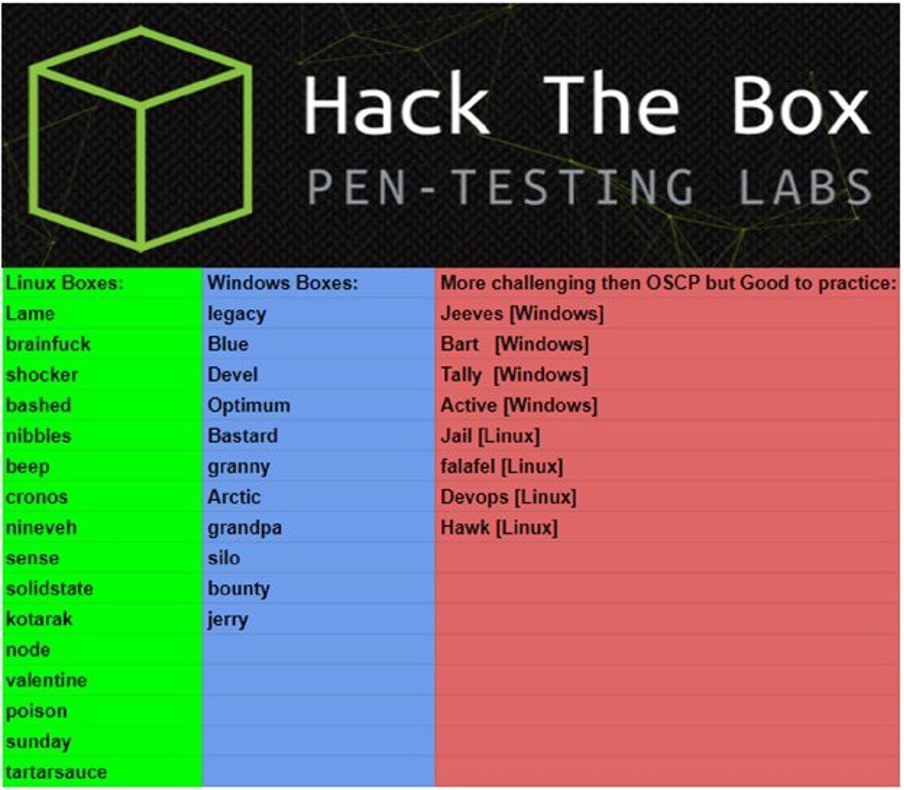
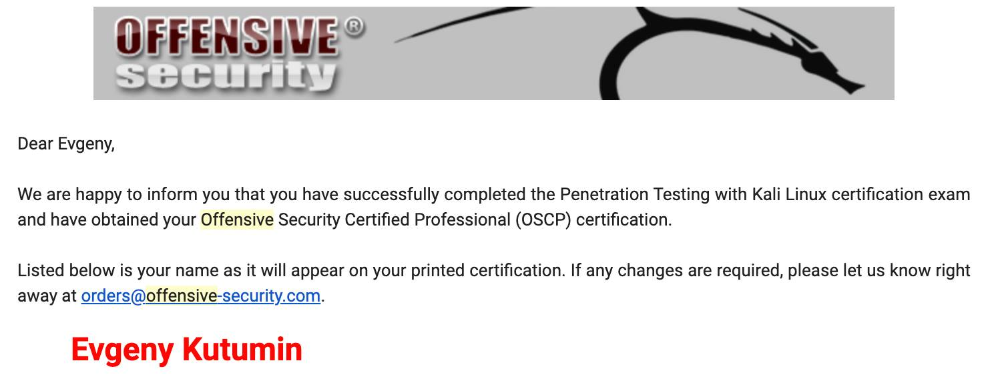

Добрый день соискатель OSCP!
В этой статье я поделюсь своим опытом сдачи и подготовке к данному экзамену.
Основными гайдами по подготовке к экзамену стали следующие статьи:
Но в самом начале пути согласно рекомендациями с разных форумах я потратил 2-3 месяца, играя с заданиями на https://overthewire.org/wargames/.
Далее согласно первому гайду я скачивал с https://vulnhub.com/ виртуальные машинки и пытался их ломать, попутно установив последнюю версию Kali Linux с официального сайта:
https://www.offensive-security.com/kali-linux-vm-vmware-virtualbox-image-download/
Список машин для практики в порядке увеличения сложности:
В процессе ломания я выработал следующий подход: ломаю сам, используя все накопленные знания, если процесс заходит в ступор после 2-3 дней, смотрим подсказку. Благо для всех машин c vulhub есть внизу описания самой виртуалки.
После vulhub я переключился на ресурс https://www.hackthebox.eu/. Ресурс интересен тем, что чтобы зарегистрироваться, необходимо провести мини pentest. После успешной регистрации я начал ломать виртуалки в рекомендуемом порядке:

В процессе подготовки я отбирал утилиты, которые мне больше всего нравились, а также ввел специальный дневник по каждой машине. При сдаче OSCP это очень помогло, поэтому советую каждому соискателю установить приложения, где вы будете вести заметки. Это может быть обычный evernote или, как советует команда PWK, приложение cherry tree, а также его аналог. Cherry имеет древовидную структуру заметок, что очень удобно для разделения по темам, машинам, и так далее.
Итак после примерно 4 месяцев танцев вокруг лаб с HTB и vulnhub, я купил курс PWK OSCP и через некоторое время получил на почту pdf гайд, видео и доступ к лаборатории через OpenVPN. Следующие примерно 3 месяца я вкуривал гайд и делал все лабораторные работы согласно гайду, где-то приходилось делать паузу, чтобы подтянуть основы python и C++
В целом могу сказать, что курс PWK выстроен очень грамотно, сначала вы смотрите видео по какой-то теме, затем Вы прочитываете тоже самое в гайде и в конце главы Вам дают задание, чтобы закрепить материал. Так шаг за шагом Вы осваиваете полный курс и выполняете все домашние задания. Кстати говоря, чтобы получить дополнительные 5 балов на экзамене Вам необходимо приложить все домашние задания, а также разбор взлома 10 машинок, но это необязательно, хотя очень практично.
После прохождения гайда и выполнения домашних заданий Вам предлагается сломать примерно 60 машин для тренировки Ваших навыков, а также подчерпнуть что-то новое, неизученное ранее. Честно признаться 3 месяца на гайд и 60 машин для показалось очень мало, поэтому я продлевал доступ к лаборатории 2 раза, моя цель была получить flag от всех машин по курсу, но в целом это совсем необязательно, учитывая немалую стоимость продления:Благо часть курса нам добродушно оплатил работодатель, продлевал я доступ к лаборатории уже за свой счет. В процессе ломания 60 машин я также использовал подход 2-3 дня пытаемся ломать сами, если не получается смотрим наводящие подсказки, для этих целей команда PWK организовала специальный форум, где студенты общаются, подсказывают друг другу и просто делятся полезной информацией, которая очень помогает в будущем.
Итак я вышел на финишную прямую, получив доступ к 60 машинам и накопив огромную тучу заметок в своем Cherry Tree. На все про все у меня ушло примерно полгода, учитывая нагрузку на работе и семейные обстоятельства. В целом в день у меня получилась уделать курсе по 3-4 часа и 5-6 на выходных, иногда какая-то машина так захватывала, но уходило полночи. Но я все же рекомендую соискателям придерживаться выработанного Вами графика, чтобы успевать восстановиться.
Я забронировал экзамен через две недель после окончания всех машин по курсу PWK, чтобы дать себе передышку, а также уделить внимание разделам, которые для меня были особенно трудны или не хватало практики, к примеру таковыми стали SQL injection без использования sqlmap и других утилит, а также buffer overflow. По первому разделу я поигрался с 2-3 виртуальными машинами, а также дополнил свои заметки необходимыми ресурсами.
Что касается buffer overflow, то тут я остановился на подольше, учитывая отдельную рекомендацию гайда: https://medium.com/@parthdeshani/how-to-pass-oscp-like-boss-b269f2ea99d + на форуме HTB я нашел еще пару статей про интересные машины для buffer overflow: https://forum.hackthebox.eu/discussion/753/oscp-buffer-overflow-practice
День экзамена
Экзамен можно забронировать на разные даты и время, при этом Вам дается 24 часа для взлома 5 машин и следующие 24 часа на написание отчета по предложенному формату.
ВАЖНО!
Вам необходимо делать скриншоты и записывать все этапы взлома сразу, ввиду того, что после первых 24 часов, доступ к экзаменационным машина теряется и Вы не сможете больше дополнить свой отчет ничем.
Касательно самого экзамена я выбрал следующую тактику: забронировал старт экзамена на 00:00, чтобы зайти в платформу, осмотреться, попробовать свои силы на час-два и пойти спать, чтобы с 8-9 утра следующего дня продолжить. Итого должно было получиться ±15 часов на взлом, учитывая сон, перекус и небольшие паузы для отдыха.
На деле получилось так: за 15 минут до экзамена я подключился к экзаменационной платформе, чтобы подтвердить свою личность на камеру, оказалось, что моя web-камера сильно отсвечивала и проктор не мог разобрать ни буквы в моих правах. Совет всем соискателям: приготовьте заранее скан паспорта и прав, потому что, если проктор не сможет прочесть их с камеры, он попросит Вас показать скан на мониторе.
И вот оно начало долгожданного экзамена. По совету бывалых первым делом нужно приступать к машине с buffer overflow, потому что она довольно несложная, но при этом Вы сразу получаете 25 баллов из 100. На данное задание я потратил примерно 30 минут, учитывая то, что перед экзаменом я потратил 2 дня на практику по buffer overflow. Далее в течение 3 часов мне поддались относительно легкая машина за 10 баллов и машина посложнее за 20 балов. Итого я ушел в сон уже с накопленными 55 баллами, при это проходной бал 70. Проспав примерно 5-6 часов и конечно же не выспавшись, ввиду того, что в голове были одни нули и единицы я вернулся к экзамену в 10-00. Следующие 6 часов я бился вокруг двух машин за 25 баллов и 20. Большую часть я убил на машину за 20, но так ничего у меня и не вышло, даже найти user или уязвимое приложение. Поэтому я решил сфокусироваться на машине за 25 баллов, учитывая то, что я сразу нашел уязвимое приложение. Потратив еще около 2 часов мне поддалась машина за 25 и я успешно набирал 80 балов, при это осталось еще порядка 5 часов до окончания экзамена. Просмотрев все свои записи по экзамену я убедился, что обладаю всеми необходимыми скриншотами и в моем Cherry Tree есть все заметки для поэтапного объяснения, как происходил взлом конкретной машины. Последняя машина мне так и не поддалась и я до сих пор думаю, что она была «неломабельна». День экзамена подошел к концу с 80 балами в итоге.
Следующий день по правилам OSCP экзамена отводится на написание отчета. Я не стал изобретать велосипед и взял стандартный шаблон отчета, предлагаемый командой PWK.
Примерно через 4 дня я получил на свой e-mail долгожданное письмо с поздравлением о получении сертификата OSCP.
Мои персональные советы: